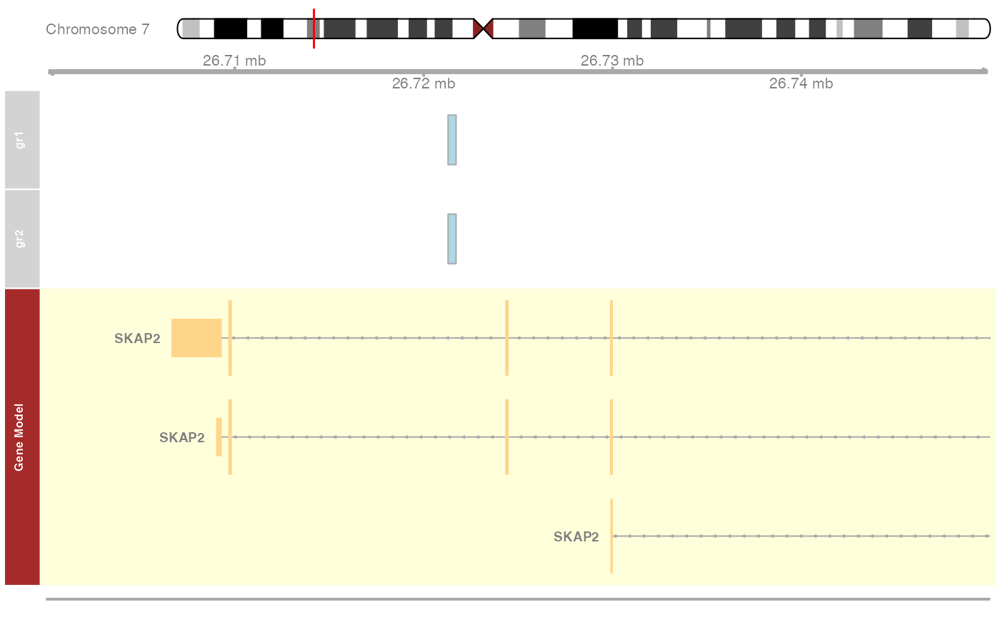
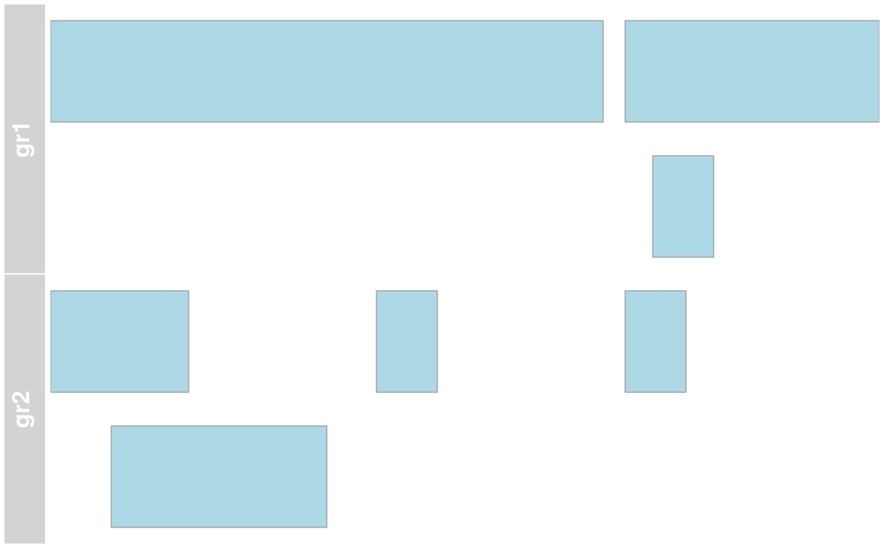

CustomBioInfoFunctionsHumanGenome
Vinod Singh
2024-04-01
Source:vignettes/CustomBioInfoFunctionsHumanGenome.Rmd
CustomBioInfoFunctionsHumanGenome.Rmd1. Introduction:
This Package contains some customized functions for common operations used in human genome analysis.
2. Availability and Installation
The development version of
CustomBioInfoFunctionsHumanGenome package is available at
https://github.com/vinodsinghjnu/CustomBioInfoFunctionsHumanGenome
and can be installed as
# install.packages("devtools")
devtools::install_github("vinodsinghjnu/CustomBioInfoFunctionsHumanGenome",build_vignettes = TRUE )3. Functions
3.1 addGrInformation
Arguments
-
gr.f: A genomic range. -
assmblyName: human genome assembly name i.e., hg19 or hg38 or t2t. Default ishg19
Details
This function will add genomic length and assembly name to given genomic ranges (Human genome only). It will remove the non-standard chromosomes from genomic ranges and report the bad genomic ranges for the selected genome assembly.
Examples
gr <- GRanges(seqnames = "chr1", strand = c("+", "-", "+"), ranges = IRanges(start = c(1,110,105), end = c(100, 120, 150 )))
outGr=addGrInformation(gr.f=gr, assmblyName='hg19')
outGr## GRanges object with 3 ranges and 0 metadata columns:
## seqnames ranges strand
## <Rle> <IRanges> <Rle>
## [1] chr1 1-100 +
## [2] chr1 110-120 -
## [3] chr1 105-150 +
## -------
## seqinfo: 24 sequences from 2 genomes (hg19, NA)3.2 pctOverlap_Of_FirstGrToSecondGr
Arguments
-
FirstContext: GenomicRange object. (query: overlapped) -
SecondContext: GenomicRange object. (overlapped to)
Examples
gr1 <- GRanges(seqnames = "chr1", strand = c("+", "-", "+"), ranges = IRanges(start = c(1,110,105), end = c(100, 120, 150 )))
gr2 <- GRanges(seqnames = "chr1", strand = c("+", "-", "+", "+"), ranges = IRanges(start = c(1,12,60, 105), end = c(25, 50, 70, 115 )))
pctOverlap_Of_FirstGrToSecondGr(FirstContext=gr1, SecondContext=gr2)## [1] 45.859873.3 emptyChrGranges
Value
Create empty chromosome GenomicRange object for a given human genome assembly
Note: Output object is labelled with assembly information.
Examples
hg_19_Chr.gr=emptyChrGranges('hg19')
head(hg_19_Chr.gr)## GRanges object with 6 ranges and 1 metadata column:
## seqnames ranges strand | Seqs
## <Rle> <IRanges> <Rle> | <DNAStringSet>
## [1] chr1 1-249250621 * | NNNNNNNNNN...NNNNNNNNNN
## [2] chr2 1-243199373 * | NNNNNNNNNN...NNNNNNNNNN
## [3] chr3 1-198022430 * | NNNNNNNNNN...NNNNNNNNNN
## [4] chr4 1-191154276 * | NNNNNNNNNN...NNNNNNNNNN
## [5] chr5 1-180915260 * | NNNNNNNNNN...NNNNNNNNNN
## [6] chr6 1-171115067 * | NNNNNNNNNN...NNNNNNNNNN
## -------
## seqinfo: 24 sequences from hg19 genome3.4 getGbins
Arguments
-
assmblyName: hg19 or hg38 0r t2t -
binSize: size of the genomic block -
chrName: name of the chromosome, if not given then all chromosomes are considered (UCSC format)
Value
GenomicRanges object of given the bin size
Note: Output object is labelled with assembly information.
Examples
hg_19_Bins.gr=getGbins(assmblyName='hg19', binSize=1000 )
head(hg_19_Bins.gr)## GRanges object with 6 ranges and 1 metadata column:
## seqnames ranges strand | CpG_counts
## <Rle> <IRanges> <Rle> | <numeric>
## [1] chr1 1-1000 * | 0
## [2] chr1 1001-2000 * | 0
## [3] chr1 2001-3000 * | 0
## [4] chr1 3001-4000 * | 0
## [5] chr1 4001-5000 * | 0
## [6] chr1 5001-6000 * | 0
## -------
## seqinfo: 24 sequences from hg19 genome3.5 DNASeqsForPattern
Description
Generate all possible DNA sequences of a Ambiguous nucleotide sequence
Details
Generate all possible DNA sequences of a Ambiguous nucleotide sequence
Examples
DNA_seqs=DNASeqsForPattern(pat='NYYN')
DNA_seqs## [1] "ACCA" "CTTC" "GCCG" "TTTT" "ATCA" "CCTC" "GTCG" "TCTT" "ACTA" "CTCC"
## [11] "GCTG" "TTCT" "ATTA" "CCCC" "GTTG" "TCCT" "ACCC" "CTTG" "GCCT" "TTTA"
## [21] "ATCC" "CCTG" "GTCT" "TCTA" "ACTC" "CTCG" "GCTT" "TTCA" "ATTC" "CCCG"
## [31] "GTTT" "TCCA" "ACCG" "CTTT" "GCCA" "TTTC" "ATCG" "CCTT" "GTCA" "TCTC"
## [41] "ACTG" "CTCT" "GCTA" "TTCC" "ATTG" "CCCT" "GTTA" "TCCC" "ACCT" "CTTA"
## [51] "GCCC" "TTTG" "ATCT" "CCTA" "GTCC" "TCTG" "ACTT" "CTCA" "GCTC" "TTCG"
## [61] "ATTT" "CCCA" "GTTC" "TCCG"3.6 createDir_delIfExists
Value
Create a directory of given name. (It will delete the directory if it is already existing there)
Examples
createDir_delIfExists(dir='testDir')## Old Directory has been deletedNew Directory has been created
dir.exists('testDir')## [1] TRUE3.7 context_oligonucsCounts
Usage
context_oligonucsCounts(contextGr=hg_38_gr, oligoType='trinucs', ignore.strand=FALSE, assmblyName='hg38')
Arguments
-
contextGr: GenomicRange object of the genomic context within which oligo-nucleotides has to be counted. -
oligoType: dinucs or trinucs or tetranucs -
ignore.strand: genomic context strand information should be considered. Default: FALSE -
assmblyName: human genome assembly name (hg19 or hg38). Default: hg19
Examples
data(hg_38_gr)
oligonucs.Counts=context_oligonucsCounts(contextGr=hg_38_gr, oligoType='trinucs', ignore.strand=FALSE, assmblyName='hg38')
oligonucs.Counts## AAA AAC AAG AAT ACA ACC ACG ACT AGA AGC
## 1325123 507680 697059 857418 698085 401071 87610 563602 766871 484544
## AGG AGT ATA ATC ATG ATT CAA CAC CAG CAT
## 615364 563602 706620 461672 634677 857418 649772 517039 700902 634677
## CCA CCC CCG CCT CGA CGC CGG CGT CTA CTC
## 630048 447455 94106 615364 76306 81429 94106 87610 451366 581037
## CTG CTT GAA GAC GAG GAT GCA GCC GCG GCT
## 700902 697059 685228 326166 581037 461672 496828 405020 81429 484544
## GGA GGC GGG GGT GTA GTC GTG GTT TAA TAC
## 533465 405020 447455 401071 399481 326166 517039 507680 727231 399481
## TAG TAT TCA TCC TCG TCT TGA TGC TGG TGT
## 451366 706620 677442 533465 76306 766871 677442 496828 630048 698085
## TTA TTC TTG TTT
## 727231 685228 649772 13251233.9 getPromGRange
Arguments
-
upst: Upstream of the promoter. Promoter region will be “upst” to -200 to TSS. DEFAULT value is 500 -
assmblyName: human genome assembly name (hg19 or hg38). Default: hg19
Examples
outGr=getPromGRange(upst=500, assmblyName='hg19')## 'select()' returned many:many mapping between keys and columns
outGr$proteinCoding.proms## GRanges object with 18918 ranges and 2 metadata columns:
## seqnames ranges strand | gene_id
## <Rle> <IRanges> <Rle> | <character>
## 79501 chr1 68591-69290 + | 79501
## 729759 chr1 367159-367858 + | 729759
## 148398 chr1 860030-860729 + | 148398
## 339451 chr1 895467-896166 + | 339451
## 84069 chr1 901377-902076 + | 84069
## ... ... ... ... . ...
## 1617 chrY 25345055-25345754 - | 1617
## 57135 chrY 26959440-26960139 - | 57135
## 9085 chrY 26193962-26194661 - | 9085
## 57054 chrY 26959440-26960139 - | 57054
## 9083 chrY 27198052-27198751 - | 9083
## GenesMap
## <data.frame>
## 79501 79501:OR4F5:protein-coding:...
## 729759 729759:OR4F29:protein-coding:...
## 148398 148398:SAMD11:protein-coding:...
## 339451 339451:KLHL17:protein-coding:...
## 84069 84069:PLEKHN1:protein-coding:...
## ... ...
## 1617 1617:DAZ1:protein-coding:...
## 57135 57135:DAZ4:protein-coding:...
## 9085 9085:CDY1:protein-coding:...
## 57054 57054:DAZ3:protein-coding:...
## 9083 9083:BPY2:protein-coding:...
## -------
## seqinfo: 24 sequences from hg19 genome
outGr$proteinCoding.genes## GRanges object with 18918 ranges and 2 metadata columns:
## seqnames ranges strand | gene_id
## <Rle> <IRanges> <Rle> | <character>
## 79501 chr1 69091-70008 + | 79501
## 729759 chr1 367659-368597 + | 729759
## 148398 chr1 860530-879961 + | 148398
## 339451 chr1 895967-901099 + | 339451
## 84069 chr1 901877-910484 + | 84069
## ... ... ... ... . ...
## 1617 chrY 25275502-25345254 - | 1617
## 57135 chrY 25275502-26959639 - | 57135
## 9085 chrY 26191377-26194161 - | 9085
## 57054 chrY 26909216-26959639 - | 57054
## 9083 chrY 27177050-27198251 - | 9083
## GenesMap
## <data.frame>
## 79501 79501:OR4F5:protein-coding:...
## 729759 729759:OR4F29:protein-coding:...
## 148398 148398:SAMD11:protein-coding:...
## 339451 339451:KLHL17:protein-coding:...
## 84069 84069:PLEKHN1:protein-coding:...
## ... ...
## 1617 1617:DAZ1:protein-coding:...
## 57135 57135:DAZ4:protein-coding:...
## 9085 9085:CDY1:protein-coding:...
## 57054 57054:DAZ3:protein-coding:...
## 9083 9083:BPY2:protein-coding:...
## -------
## seqinfo: 24 sequences from hg19 genome3.10 Gbin_ByCGcnts
Arguments
-
assmblyName: hg19 or hg38 or t2t -
CGs_perBin: CpG counts in a genomic block/bin. (even number) oligo-nucleotides has to be counted. -
addSeq: if sequence of the bin is required (Default: FALSE)
Examples
hg_19_CpGBins.gr=Gbin_ByCGcnts(CGs_perBin=100, assmblyName='hg19' )
hg_19_CpGBins.gr## GRanges object with 564328 ranges and 0 metadata columns:
## seqnames ranges strand
## <Rle> <IRanges> <Rle>
## [1] chr1 10469-10761 *
## [2] chr1 10766-11094 *
## [3] chr1 11105-12758 *
## [4] chr1 12773-15190 *
## [5] chr1 15207-17585 *
## ... ... ... ...
## [564324] chrY 59355793-59357713 *
## [564325] chrY 59357736-59360397 *
## [564326] chrY 59360409-59361720 *
## [564327] chrY 59361723-59361953 *
## [564328] chrY 59361962-59362400 *
## -------
## seqinfo: 24 sequences from hg19 genome3.11 largeVariables
Examples
largeVariables(n=5)## Class KB GB
## hg_19_Chr.gr GRanges 3023145 3.023145
## hg_19_Bins.gr GRanges 48383 0.048383
## outGr list 18654 0.018654
## hg_19_CpGBins.gr GRanges 4422 0.004422
## hg_38_gr GRanges 176 0.0001763.12 makeTracks_of_grangesList
Arguments
-
grlist: GenomicRange object of the genomic context within which oligo-nucleotides has to be counted. -
location: location on the chromosome as List. ie., list(chr=‘chr7’,from=26700000, to=26750000) -
assmblyName: human genome assembly name (hg19 or hg38). Default: hg19
Examples
# example 1
data(cpgIslands)
mygrlist=list(gr1=cpgIslands,gr2=cpgIslands)
loc=list(chr='chr7',from=26700000, to=26750000)
tracks=makeTracks_of_grangesList(grlist=mygrlist, location=loc, assmblyName='hg19')
plotTracks(tracks, from = loc$from, to = loc$to)
# example 2, only genomic ranges no annotation
gr1 <- GRanges(seqnames = "chr1", strand = c("+", "-", "+"), ranges = IRanges(start = c(1,110,105), end = c(100, 120, 150 )))
gr2 <- GRanges(seqnames = "chr1", strand = c("+", "-", "+", "+"), ranges = IRanges(start = c(1,12,60, 105), end = c(25, 50, 70, 115 )))
plotTracks(makeTracks_of_grangesList(list(gr1=gr1,gr2=gr2), if_plain=TRUE), shape="box")